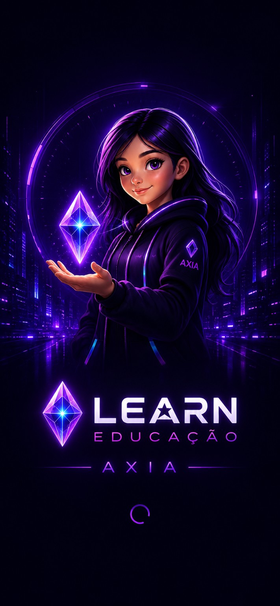
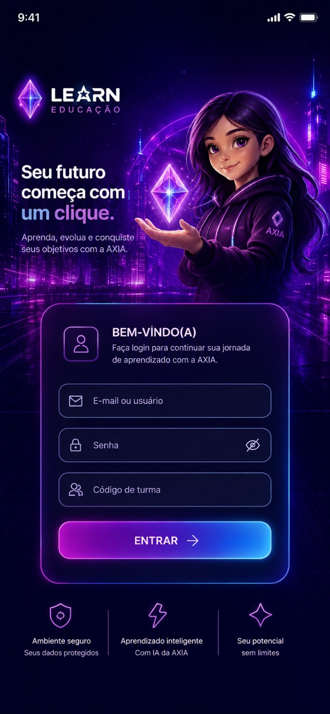

ProjetoLearn Educação
Uma experiência educacional que nasceu de protótipos e foi crescendo junto comigo. O projeto reúne aluno, professor, turma, atividades, evidências, avaliação e certificado.
A AXIA funciona como tutora de IA dentro desse universo. O foco é criar aprendizado guiado e contextual, em vez de simplesmente entregar respostas.
Este espaço será atualizado conforme novas versões, telas e decisões do projeto forem surgindo.
Este conteúdo fica em uma página própria e pode ser editado diretamente no arquivo deste post no GitHub.
Protótipo do aplicativo
Uma das telas do protótipo atual do Learn Educação, com acesso à experiência da AXIA.
